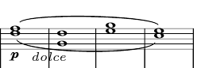
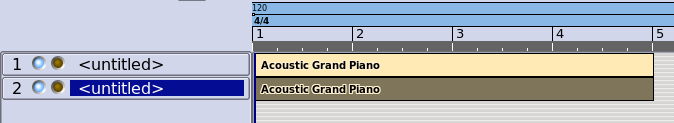
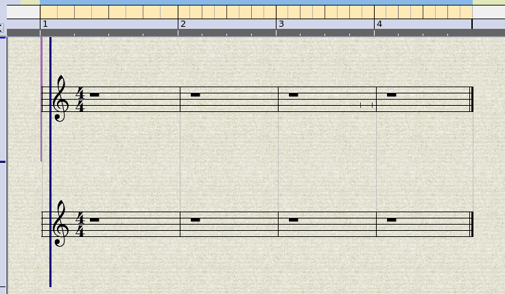
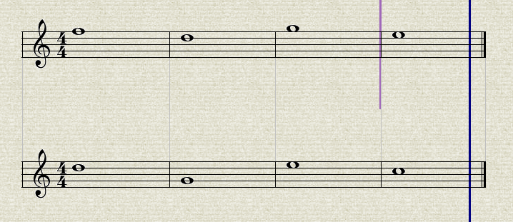
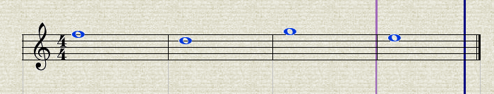
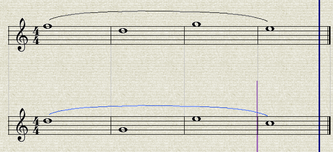
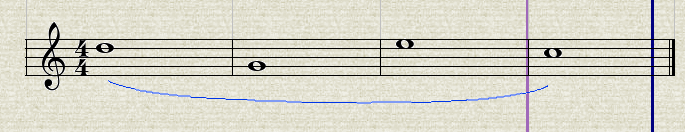
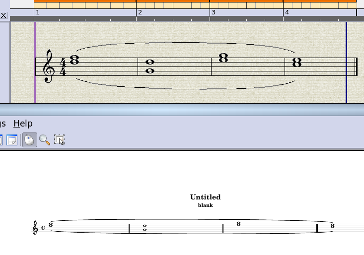
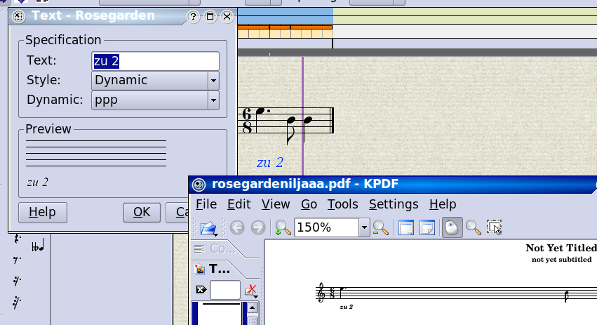

The Rosegarden Notation Challenge
Copyright © 2008 D. Michael McIntyre
This tutorial was written using a pre-release version of Rosegarden 1.7.0.
Opposing Phrasing Slurs
From Beethoven's Fidelio Overture:

This must be accomplished using two voices, so there are two sets of whole notes, and two phrasing slurs. It is easiest to work with the voices on separate tracks initially, so let's create two segments each four bars long on adjacent tracks:

Now Ctrl+A and N to open in a combined notation view:

Now enter the whole notes in each staff:

Finally, select all the whole notes on the top staff...

Then use Ctrl+) or Phrase -> Add Phrasing Slur on the top staff, then the bottom:

With the bottom still selected, use Phrase -> Slur Position -> Slur Below (there is no shortcut for this one) to flip the lower slur down:

Finally, drag the lower segment on top of the upper one, then Ctrl+A and N again to view the segments overlapping on the same staff, and do a File -> Preview with LilyPond to confirm the match:

The "zu 2" Dynamic
The Fidelio example also includes an unusual dynamic. I just doctored the LilyPond export to make it possible to export arbitrary texts like this as a markup, instead of filtering out dynamic types that LilyPond doesn't recognize.
